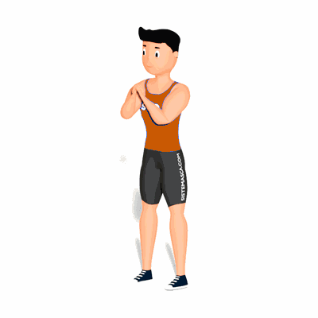

Air Squat

O exercício trabalha toda a musculatura das pernas e o core. Também auxilia a aceleração vertical aumentando os níveis de performance.
Ficha Técnica
Tipo: CrossFit
Grupo Muscular: Perna
Aparelho: Nenhum
Músculos: Nenhum
Como realizar
- Peso do corpo nos calcanhares;
- Manter a curvatura da lombar;
- Peitoral Alto;
- O quadril acompanha o movimento de descida e subida;
- O agachamento é abaixo do paralelo (vinco do quadril é abaixo da parte superior da patela);
- Os joelhos acompanham a direção dos pés;
- Extensão dos quadris e joelhos devem ser completas;
- A posição da cabeça é neutra;
 RC STORE
RC STORE